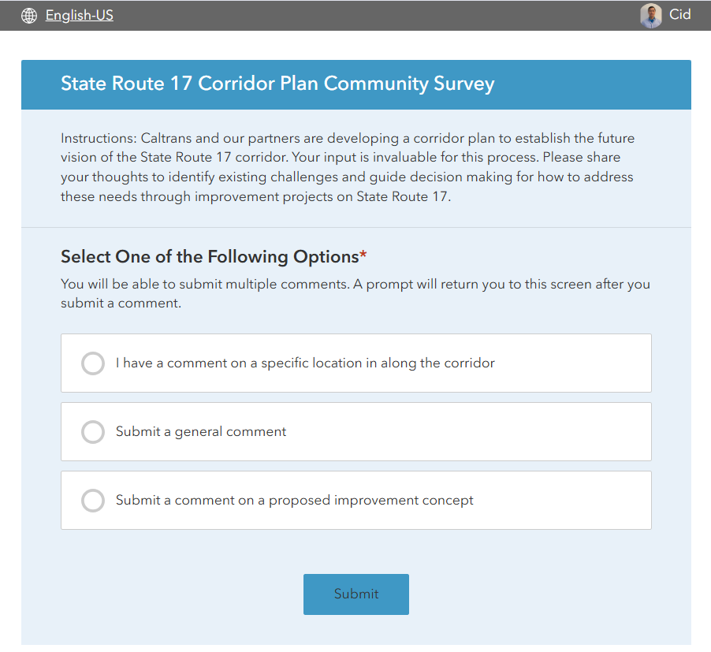

February 2026

Our office is developing a study for State Route 17 and needs a Survey123 survey to collect feedback from stakeholders and the general public. The survey must support map-based input so participants can provide location-specific comments. The survey is built using a question-based (branching) format: the first question presents three options, and the participant’s selection determines which follow-up questions, maps, and project information are displayed. The three options are:
Option 1: Comment on an existing project concept If the participant selects Comment on an existing project concept, a drop-down list of approximately 90+ projects is displayed. A map and legend also appear, showing the projects as red points. When a participant clicks a red point, Survey123 captures the project name and description. This automatically links the submitted comment to the selected existing project, making it easy to identify which responses relate to which project concepts.
Option 2: Suggest a new project If the participant selects Suggest a new project, a blank map is displayed. The participant can place a point on the map to indicate the location of their suggested project. Follow-up questions are then used to collect the details of the suggestion.
Option 3: Provide general comments If the participant selects Provide general comments, no map is shown. Instead, the survey displays general questions to collect non-location-specific feedback.
This Survey123 app also includes built-in reply capabilities and different languages including Spanish, Chinese and Vietnamese